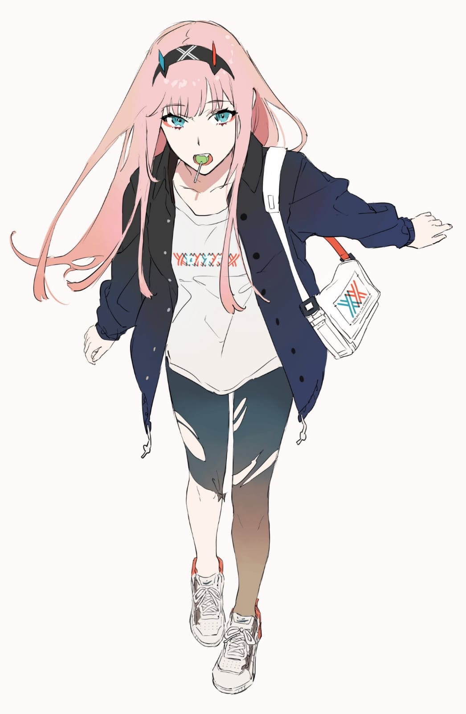

Weeb Endpoints
/anime
HTTP Request
GET https://weeb-api.vercel.app/anime?search=Rent-A-Girlfriend
Query Parameters
| Parameter | Required | Description |
|---|---|---|
| search | true | Anime information from Anilist |
The response schema would be like this:
[
{
"id":113813,
"idMal":40839,
"title":{
"romaji":"Kanojo, Okarishimasu",
"english":"Rent-a-Girlfriend",
"native":"彼女、お借りします"
},
"status":"FINISHED",
"hashtag":"#彼女お借りします #かのかり",
"format":"TV",
"isAdult":false,
"season":"SUMMER",
"averageScore":68,
"popularity":204948,
"source":"MANGA",
"duration":24,
"episodes":12,
"genres":[
"Comedy",
"Drama",
"Romance"
],
"startDate":"11-7-2020",
"endDate":"26-9-2020",
"studios":"TMS Entertainment, DMM pictures, Kodansha, Mainichi Broadcasting System, Crunchyroll",
"trailer":{
"id":"jZFEtc3CKHs",
"site":"youtube",
"thumbnail":"https://i.ytimg.com/vi/jZFEtc3CKHs/hqdefault.jpg"
},
"siteUrl":"https://anilist.co/anime/113813",
"imageUrl":"https://img.anili.st/media/113813",
"bannerImage":"https://s4.anilist.co/file/anilistcdn/media/anime/banner/113813-Al8VofQuNQHV.jpg",
"coverImage":"https://s4.anilist.co/file/anilistcdn/media/anime/cover/large/bx113813-UCgSIGyWvLgl.jpg",
"description":"In today’s Japan, “rental” services can deliver an afternoon with a “friend,” a “parent,” even a fake girlfriend! After a staggering betrayal by his girlfriend, hapless freshman Kazuya gets just desperate enough to give it a try. But he quickly discovers how complicated it can be to “rent” an emotional connection, and his new “girlfriend,” who’s trying to keep her side hustle secret, will panic when she finds out her real life and Kazuya’s are intertwined in surprising ways! Family, school, and life all start to go wrong, too…\n<br><br>\n(Source: Kodansha USA)"
},
...
]
/character
HTTP Request
GET https://weeb-api.vercel.app/character?search=Mizuhara
Query Parameters
| Parameter | Required | Description |
|---|---|---|
| search | true | Character information from Anilist |
The response schema would be like this:
[
{
"id":128106,
"name":{
"full":"Chizuru Ichinose",
"native":"一ノ瀬ちづる"
},
"age":"19-20",
"gender":"Female",
"bloodType":null,
"dateOfBirth":"19-4-null",
"image":"https://s4.anilist.co/file/anilistcdn/character/large/b128106-zSTsuULvz6PX.png",
"siteUrl":"https://anilist.co/character/128106",
"description":"__Height:__ 162 cm\n\nChizuru Ichinose, alternatively known as Chizuru Mizuhara in her \"rental girlfriend\" persona, is a college student at Nerima University who is majoring in Literature and she currently lives in Room 204 of Royal Hills Nerima, just next to [Kazuya Kinoshita](https://anilist.co/character/128105/Kazuya-Kinoshita)."
},
...
]
/loli
HTTP Request
GET https://weeb-api.vercel.app/loli
Response Buffer
The response Buffer would be like this:
—
/manga
HTTP Request
GET https://weeb-api.vercel.app/manga?search=Rent-A-Girlfriend
Query Parameters
| Parameter | Required | Description |
|---|---|---|
| search | true | Manga information from Anilist |
The response schema would be like this:
[
{
"id":99943,
"idMal":108407,
"title":{
"romaji":"Kanojo, Okarishimasu",
"english":"Rent-A-Girlfriend",
"native":"彼女、お借りします"
},
"status":"RELEASING",
"format":"MANGA",
"isAdult":false,
"averageScore":62,
"source":"ORIGINAL",
"genres":[
"Comedy",
"Drama",
"Ecchi",
"Romance"
],
"startDate":"12-7-2017",
"endDate":"null-null-null",
"volumes":null,
"chapters":null,
"trailer":{
"id":"XoaOzvlf19Q",
"site":"youtube",
"thumbnail":"https://i.ytimg.com/vi/XoaOzvlf19Q/hqdefault.jpg"
},
"siteUrl":"https://anilist.co/manga/99943",
"imageUrl":"https://img.anili.st/media/99943",
"bannerImage":"https://s4.anilist.co/file/anilistcdn/media/manga/banner/99943-bs6PEAZgj1wy.jpg",
"coverImage":"https://s4.anilist.co/file/anilistcdn/media/manga/cover/large/bx99943-0tJ6oNhn3xet.png",
"description":"In today’s Japan, “rental” services can deliver an afternoon with a “friend,” a “parent,” even a fake girlfriend! After a staggering betrayal by his girlfriend, hapless freshman Kazuya gets just desperate enough to give it a try. But he quickly discovers how complicated it can be to “rent” an emotional connection, and his new “girlfriend,” who’s trying to keep her side hustle secret, will panic when she finds out her real life and Kazuya’s are intertwined in surprising ways! Family, school, and life all start to go wrong, too… It’s sweet but naïve boy meets cute but ruthless girl in this 21st-century manga rom-com!\n<br><br>\n(Source: Kodansha USA)"
},
...
]
/neko
HTTP Request
GET https://weeb-api.vercel.app/neko
Response Buffer
The response Buffer would be like this: —
/waifu
HTTP Request
GET https://weeb-api.vercel.app/waifu
Response Buffer
The response Buffer would be like this: —
/wallpaper
HTTP Request
GET https://weeb-api.vercel.app/wallpaper?query=Naruto
Query Parameters
| Parameter | Required | Description |
|---|---|---|
| query | true | Query to request search related wallpaper |
The response schema would be like this:
[
"https://w.wallhaven.cc/full/47/wallhaven-47mzme.jpg",
"https://cs14.pikabu.ru/post_img/2022/02/06/8/1644151789250329215.jpg",
"https://cs12.pikabu.ru/post_img/2022/07/03/11/165687697111909022.jpg",
"https://cs14.pikabu.ru/post_img/2022/07/03/11/1656876779231763535.jpg",
"https://cs14.pikabu.ru/post_img/2023/03/15/7/1678877207162429047.jpg",
"https://cs12.pikabu.ru/post_img/2022/07/03/11/16568769741862166.jpg",
"https://cs13.pikabu.ru/post_img/2023/04/11/8/1681218215372075414.jpg",
"https://cs14.pikabu.ru/post_img/2023/04/11/8/168121821734156614.jpg",
"https://cs14.pikabu.ru/post_img/2021/09/24/9/163249783812128810.jpg",
"https://cs14.pikabu.ru/post_img/2022/06/19/5/165562283218184200.jpg",
"https://cs12.pikabu.ru/post_img/2021/12/01/10/163837787215853815.jpg",
"https://cs14.pikabu.ru/post_img/2023/04/11/8/1681218214337040667.jpg",
"https://cs12.pikabu.ru/post_img/2022/07/03/11/1656876789176634692.jpg",
"https://w.wallhaven.cc/full/85/wallhaven-85ow6k.jpg",
"https://cs12.pikabu.ru/post_img/2022/07/03/11/1656876961131938369.jpg",
"https://cs14.pikabu.ru/post_img/2022/07/03/11/1656876778145796622.jpg",
"https://cs12.pikabu.ru/post_img/2022/06/19/5/1655622871188135176.jpg",
"https://cs12.pikabu.ru/post_img/2021/12/24/7/1640346688188144519.jpg",
"https://w.wallhaven.cc/full/0w/wallhaven-0wg7e7.png",
"https://cs13.pikabu.ru/post_img/2023/04/11/8/1681218219375058913.jpg",
...
]
/zerotwo
HTTP Request
GET https://weeb-api.vercel.app/zerotwo
Response Buffer
The response Buffer would be like this: 
/zoro/anime
HTTP Request
GET https://weeb-api.vercel.app/zoro/anime?url=https://zoro.to/naruto-the-movie-3-guardians-of-the-crescent-moon-kingdom-4005
Query Parameters
| Parameter | Required | type | Description |
|---|---|---|---|
| url | true | string |
Zoro Post URL |
The response schema would be like this:
{
"title":"Naruto Movie 3: Dai Koufun! Mikazuki Jima no Animaru Panikku Dattebayo!",
"japanese":"劇場版 NARUTO -ナルト- 大興奮!みかづき島のアニマル騒動だってばよ",
"synonyms":"Naruto Movie Volume 3, Naruto: Gekijouban Naruto: Dai Koufun! Mikazuki-jima no Animal Panic Datte ba yo!",
"aired":"Aug 5, 2006",
"premiered":"Fall 2006",
"duration":"1h 34m",
"status":"Finished Airing",
"malScore":"6.9",
"genres":"Action, Adventure",
"studios":"Studio Pierrot",
"producers":"Studio Pierrot, Viz Media",
"description":"Led by Kakashi Hatake, Naruto Uzumaki, Sakura Haruno, and Rock Lee are tasked to escort the extravagant Prince Michiru Tsuki and his spoiled son Hikaru to the prosperous Land of Moon when the two return from a long trip around the world. As if guarding two whimsical high-ranked individuals was not challenging enough, the prince's reckless decision to acquire an entire circus during their journey—mainly to entertain Hikaru's wish of owning the saber-toothed tiger featured in the show—further propels the mission into disarray.Just as things are finally settling down, the arrival of Michiru's convoy at the Land of Moon is met with an unforeseen crisis—the greedy Chief Minister Shabadaba has taken over the country with the assistance of mysterious, powerful ninjas. While Kakashi's team relentlessly fights the enemy by any means necessary, the two princes are forced to confront a new outlook on life through adversity.[Written by MAL Rewrite]"
}
/zoro/search
HTTP Request
GET https://weeb-api.vercel.app/zoro/search?query=Naruto
Query Parameters
| Parameter | Required | type | Description |
|---|---|---|---|
| query | true | string |
Anime Name you want to search on Zoro |
The response schema would be like this:
[
{
"title":"Road of Naruto",
"url":"https://zoro.to/road-of-naruto-18220",
"type":"ONA",
"duration":"9m",
"thumbnail":"https://img.flawlessfiles.com/_r/300x400/100/fd/41/fd414879634ea83ad2c4fc1c33e8ac43/fd414879634ea83ad2c4fc1c33e8ac43.jpg"
},
{
"title":"Boruto: Naruto Next Generations",
"url":"https://zoro.to/boruto-naruto-next-generations-8143",
"type":"TV",
"duration":"23m",
"thumbnail":"https://img.flawlessfiles.com/_r/300x400/100/32/c8/32c83e2ad4a43229996356840db3982c/32c83e2ad4a43229996356840db3982c.jpg"
},
{
"title":"Naruto OVA2: The Lost Story - Mission: Protect the Waterfall Village",
"url":"https://zoro.to/naruto-ova2-the-lost-story-mission-protect-the-waterfall-village-4538",
"type":"Special",
"duration":"40m",
"thumbnail":"https://img.flawlessfiles.com/_r/300x400/100/ed/2c/ed2ca489d8c438c880056ea507efc93c/ed2ca489d8c438c880056ea507efc93c.jpg"
},
{
"title":"Boruto: Naruto the Movie - The Day Naruto Became the Hokage",
"url":"https://zoro.to/boruto-naruto-the-movie-the-day-naruto-became-the-hokage-1805",
"type":"Special",
"duration":"10m",
"thumbnail":"https://img.flawlessfiles.com/_r/300x400/100/b1/9c/b19c06fae70eab67b1f390ed3cd905d8/b19c06fae70eab67b1f390ed3cd905d8.jpg"
},
...
]
/zoro/popular
HTTP Request
GET https://weeb-api.vercel.app/zoro/popular
The response schema would be like this:
[
{
"title":"One Piece",
"type":"TV",
"duration":"24m",
"episodes":"",
"image":"https://img.flawlessfiles.com/_r/300x400/100/54/90/5490cb32786d4f7fef0f40d7266df532/5490cb32786d4f7fef0f40d7266df532.jpg",
"url":"https://zoro.to/one-piece-100",
"description":"Gold Roger was known as the \"Pirate King,\" the strongest and most infamous being to have sailed the Grand Line. The capture and execution of Roger by the World Government brought a change throughout the world. His last words before his death revealed the existence of the greatest treasure in the world, One Piece. It was this revelation that brought about the Grand Age of Pirates, men who dreamed of finding One Piece—which promises an unlimited amount of riches and fame—and quite possibly the pinnacle of glory and the title of the Pirate King.\n\nEnter Monkey Luffy, a 17-year-old boy who defies your standard definition of a pirate. Rather than the popular persona of a wicked, hardened, toothless pirate ransacking villages for fun, Luffy's reason for being a pirate is one of pure wonder: the thought of an exciting adventure that leads him to intriguing people and ultimately, the promised treasure. Following in the footsteps of his childhood hero, Luffy and his crew travel across the Grand Line, experiencing crazy adventures, unveiling dark mysteries and battling strong enemies, all in order to reach the most coveted of all fortunes—One Piece.\n\n[Written by MAL Rewrite]"
},
{
"title":"Naruto: Shippuden",
"type":"TV",
"duration":"23m",
"episodes":"500",
"image":"https://img.flawlessfiles.com/_r/300x400/100/9c/bc/9cbcf87f54194742e7686119089478f8/9cbcf87f54194742e7686119089478f8.jpg",
"url":"https://zoro.to/naruto-shippuden-355",
"description":"It has been two and a half years since Naruto Uzumaki left Konohagakure, the Hidden Leaf Village, for intense training following events which fueled his desire to be stronger. Now Akatsuki, the mysterious organization of elite rogue ninja, is closing in on their grand plan which may threaten the safety of the entire shinobi world.\n \nAlthough Naruto is older and sinister events loom on the horizon, he has changed little in personality—still rambunctious and childish—though he is now far more confident and possesses an even greater determination to protect his friends and home. Come whatever may, Naruto will carry on with the fight for what is important to him, even at the expense of his own body, in the continuation of the saga about the boy who wishes to become Hokage.\n\n[Written by MAL Rewrite]"
},
{
"title":"Demon Slayer: Kimetsu no Yaiba Swordsmith Village Arc",
"type":"TV",
"duration":"24m",
"episodes":"11",
"image":"https://img.flawlessfiles.com/_r/300x400/100/db/2f/db2f3ce7b9cab7fdc160b005bffb899a/db2f3ce7b9cab7fdc160b005bffb899a.png",
"url":"https://zoro.to/demon-slayer-kimetsu-no-yaiba-swordsmith-village-arc-18056",
"description":"It adapts the story from volume 12 (chapter 98 onwards) of the manga series \"Demon Slayer: Kimetsu no Yaiba\" . The story takes place in a new setting - Tanjiro arrives at the \"Swordsmith Village.\" After the death of Upper Moon Six and Daki, a vacancy appears among the upper moons, and Muzan Kibutsuji summons the remaining upper moons to the Infinity Castle. Muzan is furious about the vacancy and believes that the upper moons should do everything in their power to find the \"Blue Spider Lily\" and eliminate the Demon Slayer Corps. As a result, Upper Moon Four, Hantengu, and Upper Moon Five, Gyokko, are dispatched to carry out the mission. Meanwhile, Tanjiro, who has been recovering from his injuries at the Butterfly Estate for two months, learns that Kozo Kanamori, the swordsmith, has refused to make him a new sword. Following the advice of the Hashira, Shinobu Kocho, Suma Nakahara, and Kiyo Terauchi, Tanjiro travels to the Swordsmith Village to conUpon arrival, he encounters the Love Hashira, Mitsuri Kanroji, and the Mist Hashira, Muichiro Tokito, as well as Genya Shinazugawa. Tanjiro and his companions are about to embark on a new battle. The opening theme song \"Ketsui no Hikari\" is performed by MAN WITH A MISSION and milet. The lyrics and composition are by Jean-Ken Johnny, with arrangement by MAN WITH A MISSION and cooperation by Chisato Ichinose. The ending theme song \"Koikogare\" is also performed by MAN WITH A MISSION and milet."
},
...
]